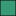
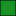
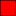
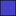
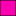

<!doctype html>
<html lang="en">
    <head>
        <meta charset="utf-8">
        <meta http-equiv="X-UA-Compatible" content="IE=edge">
        <meta name="viewport" content="initial-scale=1,user-scalable=no,maximum-scale=1,width=device-width">
        <meta name="mobile-web-app-capable" content="yes">
        <meta name="apple-mobile-web-app-capable" content="yes">
        <link rel="stylesheet" href="http://unpkg.com/leaflet@1.0.3/dist/leaflet.css">
        <link rel="stylesheet" href="css/L.Control.Locate.min.css">
        <link rel="stylesheet" href="css/qgis2web.css">
        <link rel="stylesheet" href="css/leaflet-search.css">
        <link rel="stylesheet" href="css/Control.OSMGeocoder.css">
        <link rel="stylesheet" href="css/leaflet-measure.css">
        
        <style>
        html, body, #map {
            width: 100%;
            height: 100%;
            padding: 0;
            margin: 0;
        }
        .leaflet-popup-content {
            max-width: 500px;
            max-height: 300px;
            overflow-y: scroll;
        }
        </style>
        <title></title>
    </head>
    <body>
        <div id="map"></div>
        <script src="js/qgis2web_expressions.js"></script>
        <script src="http://unpkg.com/leaflet@1.0.3/dist/leaflet.js"></script>
        <script src="js/leaflet.rotatedMarker.js"></script>
        <script src="js/leaflet.pattern.js"></script>
        <script src="js/leaflet-hash.js"></script>
        <script src="js/Autolinker.min.js"></script>
        <script src="js/rbush.min.js"></script>
        <script src="js/labelgun.min.js"></script>
        <script src="js/labels.js"></script>
        <script src="js/Control.OSMGeocoder.js"></script>
        <script src="js/leaflet-search.js"></script>
        <script src="js/leaflet-measure.js"></script>
        <script src="data/BFN.js"></script>
        <script src="data/BNN.js"></script>
        <script src="data/BoldHorizons.js"></script>
        <script src="data/GON.js"></script>
        <script src="data/GSN.js"></script>
        <script src="data/ONSW.js"></script>
        <script src="data/URN.js"></script>
        <script src="data/WHN.js"></script>
        <script>
        
        var highlightLayer;
        function highlightFeature(e) {
            highlightLayer = e.target;

            if (e.target.feature.geometry.type === 'LineString') {
              highlightLayer.setStyle({
                color: 'rgba(255,255,0,0.5)',
              });
            } else {
              highlightLayer.setStyle({
                fillColor: 'rgba(255,255,0,0.85)',
                fillOpacity: 1
              });
            }
            //highlightLayer.openPopup();
        }
        var map = L.map('map', {
            zoomControl:true, maxZoom:28, minZoom:1
        }).fitBounds([[-33.9935841866,150.929961117],[-33.4791207641,151.591758313]]);
        var hash = new L.Hash(map);
        map.attributionControl.addAttribution('<a href="https://github.com/tomchadwin/qgis2web" target="_blank">qgis2web</a>');
        var measureControl = new L.Control.Measure({
            primaryLengthUnit: 'meters',
            secondaryLengthUnit: 'kilometers',
            primaryAreaUnit: 'sqmeters',
            secondaryAreaUnit: 'hectares'
        });
        measureControl.addTo(map);
        var bounds_group = new L.featureGroup([]);
        var basemap0 = L.tileLayer('http://{s}.tile.openstreetmap.org/{z}/{x}/{y}.png', {
            attribution: '&copy; <a href="http://openstreetmap.org">OpenStreetMap</a> contributors,<a href="http://creativecommons.org/licenses/by-sa/2.0/">CC-BY-SA</a>',
            maxZoom: 28
        });
        basemap0.addTo(map);
        function setBounds() {
        }
        
        function style_GON() {
            return {
                pane: 'pane_GON',
                opacity: 1,
                color: 'rgba(0,0,0,1.0)',
                dashArray: '',
                lineCap: 'butt',
                lineJoin: 'miter',
                weight: 1.0, 
                fillOpacity: 1,
                fillColor: 'rgba(255,135,0,1.0)',
            }
        }
        map.createPane('pane_GON');
        map.getPane('pane_GON').style.zIndex = 400;
        map.getPane('pane_GON').style['mix-blend-mode'] = 'normal';
        
        
        
        function style_BFN() {
            return {
                pane: 'pane_BFN',
                opacity: 1,
                color: 'rgba(0,0,0,1.0)',
                dashArray: '',
                lineCap: 'butt',
                lineJoin: 'miter',
                weight: 1.0, 
                fillOpacity: 1,
                fillColor: 'rgba(255,0,177,1.0)',
            }
        }
        map.createPane('pane_BFN');
        map.getPane('pane_BFN').style.zIndex = 401;
        map.getPane('pane_BFN').style['mix-blend-mode'] = 'normal';
        
        
        
        function style_BNN() {
            return {
                pane: 'pane_BNN',
                opacity: 1,
                color: 'rgba(0,0,0,1.0)',
                dashArray: '',
                lineCap: 'butt',
                lineJoin: 'miter',
                weight: 1.0, 
                fillOpacity: 1,
                fillColor: 'rgba(69,66,201,1.0)',
            }
        }
        map.createPane('pane_BNN');
        map.getPane('pane_BNN').style.zIndex = 402;
        map.getPane('pane_BNN').style['mix-blend-mode'] = 'normal';
        
        
        
        function style_BoldHorizons() {
            return {
                pane: 'pane_BoldHorizons',
                opacity: 1,
                color: 'rgba(0,0,0,1.0)',
                dashArray: '',
                lineCap: 'butt',
                lineJoin: 'miter',
                weight: 1.0, 
                fillOpacity: 1,
                fillColor: 'rgba(126,192,45,1.0)',
            }
        }
        map.createPane('pane_BoldHorizons');
        map.getPane('pane_BoldHorizons').style.zIndex = 403;
        map.getPane('pane_BoldHorizons').style['mix-blend-mode'] = 'normal';
        
        
        
        function style_GSN() {
            return {
                pane: 'pane_GSN',
                opacity: 1,
                color: 'rgba(0,0,0,1.0)',
                dashArray: '',
                lineCap: 'butt',
                lineJoin: 'miter',
                weight: 1.0, 
                fillOpacity: 1,
                fillColor: 'rgba(175,190,114,1.0)',
            }
        }
        map.createPane('pane_GSN');
        map.getPane('pane_GSN').style.zIndex = 404;
        map.getPane('pane_GSN').style['mix-blend-mode'] = 'normal';
        
        
        
        function style_ONSW() {
            return {
                pane: 'pane_ONSW',
                opacity: 1,
                color: 'rgba(0,0,0,1.0)',
                dashArray: '',
                lineCap: 'butt',
                lineJoin: 'miter',
                weight: 1.0, 
                fillOpacity: 1,
                fillColor: 'rgba(255,0,0,1.0)',
            }
        }
        map.createPane('pane_ONSW');
        map.getPane('pane_ONSW').style.zIndex = 405;
        map.getPane('pane_ONSW').style['mix-blend-mode'] = 'normal';
        
        
        function style_WHN() {
            return {
                pane: 'pane_WHN',
                opacity: 1,
                color: 'rgba(0,0,0,1.0)',
                dashArray: '',
                lineCap: 'butt',
                lineJoin: 'miter',
                weight: 1.0, 
                fillOpacity: 1,
                fillColor: 'rgba(57,154,120,1.0)',
            }
        }
        map.createPane('pane_WHN');
        map.getPane('pane_WHN').style.zIndex = 407;
        map.getPane('pane_WHN').style['mix-blend-mode'] = 'normal';
        
        
        function style_URN() {
            return {
                pane: 'pane_URN',
                opacity: 1,
                color: 'rgba(0,0,0,1.0)',
                dashArray: '',
                lineCap: 'butt',
                lineJoin: 'miter',
                weight: 1.0, 
                fillOpacity: 1,
                fillColor: 'rgba(27,146,37,1.0)',
            }
        }
        map.createPane('pane_URN');
        map.getPane('pane_URN').style.zIndex = 406;
        map.getPane('pane_URN').style['mix-blend-mode'] = 'normal';


        
        function pop_layer(feature, layer) {
            layer.on({
                mouseout: function(e) {
                    for (i in e.target._eventParents) {
                        e.target._eventParents[i].resetStyle(e.target);
                    }
                },
                mouseover: highlightFeature,
            });
            var popupContent = '<table>\
                    <tr>\
                        <td colspan="2">' + (feature.properties['id'] !== null ? Autolinker.link(String(feature.properties['id'])) : '') + '</td>\
                    </tr>\
                    <tr>\
                        <td colspan="2"><h3>' + (feature.properties['MapName'] !== null ? Autolinker.link(String(feature.properties['MapName'])) : '') + '</h3></td>\
                    </tr>\
                    <tr>\
                        <th scope="row">Club</th>\
                        <td>' + (feature.properties['Club'] !== null ? Autolinker.link(String(feature.properties['Club'])) : '') + '</td>\
                    </tr>\
                    <tr>\
                        <th scope="row">Scale</th>\
                        <td>1:' + (feature.properties['Scale'] !== null ? Autolinker.link(String(feature.properties['Scale'])) : '') + '</td>\
                    </tr>\
                    <tr>\
                        <th scope="row">Contours</th>\
                        <td>' + (feature.properties['ContourInt'] !== null ? Autolinker.link(String(feature.properties['ContourInt'])) : '') + 'm</td>\
                    </tr>\
                </table>';
            layer.bindPopup(popupContent);
        }
        

        var layer_BFN = new L.geoJson(json_BFN, {
            attribution: '<a href=""></a>',
            pane: 'pane_BFN',
            onEachFeature: pop_layer,
            style: style_BFN,
        });
        
        
        var layer_GON = new L.geoJson(json_GON, {
            attribution: '<a href=""></a>',
            pane: 'pane_GON',
            onEachFeature: pop_layer,
            style: style_GON,
        });
        
        
        var layer_GSN = new L.geoJson(json_GSN, {
            attribution: '<a href=""></a>',
            pane: 'pane_GSN',
            onEachFeature: pop_layer,
            style: style_GSN,
        });

        
        var layer_BoldHorizons = new L.geoJson(json_BoldHorizons, {
            attribution: '<a href=""></a>',
            pane: 'pane_BoldHorizons',
            onEachFeature: pop_layer,
            style: style_BoldHorizons,
        });
        
        
        var layer_WHN = new L.geoJson(json_WHN, {
            attribution: '<a href=""></a>',
            pane: 'pane_WHN',
            onEachFeature: pop_layer,
            style: style_WHN,
        });
        
        
        var layer_URN = new L.geoJson(json_URN, {
            attribution: '<a href=""></a>',
            pane: 'pane_URN',
            onEachFeature: pop_layer,
            style: style_URN,
        });
        
        
        var layer_ONSW = new L.geoJson(json_ONSW, {
            attribution: '<a href=""></a>',
            pane: 'pane_ONSW',
            onEachFeature: pop_layer,
            style: style_ONSW,
        });
        
        
        var layer_BNN = new L.geoJson(json_BNN, {
            attribution: '<a href=""></a>',
            pane: 'pane_BNN',
            onEachFeature: pop_layer,
            style: style_BNN,
        });        
        
        
        var layers = L.featureGroup([layer_BNN,layer_BFN,layer_GSN,layer_GON,layer_BoldHorizons,layer_WHN,layer_URN,layer_ONSW]).addTo(map).addTo(bounds_group);
            
        
        var osmGeocoder = new L.Control.OSMGeocoder({
            collapsed: false,
            position: 'topright',
            text: 'Search',
        });
        osmGeocoder.addTo(map);
        

        var baseMaps = {};
        L.control.layers(baseMaps,{' WHN': layer_WHN,' URN': layer_URN,' ONSW': layer_ONSW,' GSN': layer_GSN,' BoldHorizons': layer_BoldHorizons,' BNN': layer_BNN,' BFN': layer_BFN,' GON': layer_GON}).addTo(map);
        setBounds();
        
        
        map.addControl(new L.Control.Search({
            layer: layers,
            propertyName: 'MapName',
            hideMarkerOnCollapse: true,
            initial: false}));
        </script>
    </body>
</html>
